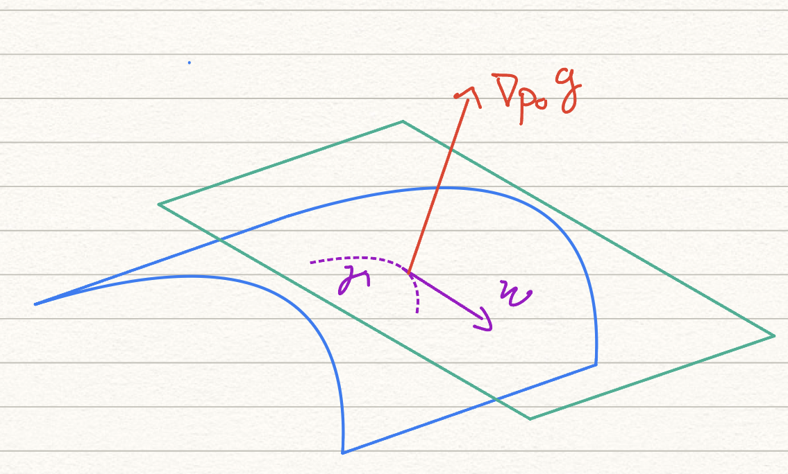

Sean $U\subseteq \mathbb{R}^n$ un abierto y $f,g:U \to \mathbb{R}$ funciones clase $C^1$ en $U$. Supongamos que $p_0\in U$ es un extremo local de \(f\) (es decir, máximo o mínimo realtivo) con la restricción $g(p)=0$.
Es decir, para alguna bola \(B_r(p)\), \[ \max_{p\in B_r(p), g(p)=0 } \{ f(p)\}=f(p_0) \quad \textrm{ó} \quad \min_{p\in B_r(p), g(p)=0 } \{ f(p)\}=f(p_0) \]
Si $\nabla_{p_0}g \ne 0$ entonces existe $\lambda \in \mathbb{R}$ tal que $$ \nabla_{p_0}f =\lambda \nabla_{p_0}g. $$
Para la demostración vamos a usar el siguiente resultado de álgebra lineal: si \(u \in \mathbb{R}^n \) es un vector distinto de \(0\) entonces todo \(p\in \mathbb{R}^n\) puede escribirse de manera única como \[ p=\lambda u + w \] donde \(w\) es un vector ortogonal a \(u\) y \(\lambda \in \mathbb{R}\).
Vamos a tomar \(u=\nabla_{p_0}g\). Aplicando el resultado de álgebra lineal podemos escribir \[ \nabla_{p_0}f = \lambda \nabla_{p_0}g + w \] donde \(w\) es un vector ortogonal a \(\nabla_{p_0}g\).
Nuestro objetivo ahora es probar que \(w=0\) lo que hacemos por contradiccíon.
Si \(w\neq 0\) entonces \(w\) es un vector ortogonal a \(\nabla_{p_0}g\) y por lo tanto \(w\) está en el espacio tangente al conjunto de nivel \(\{p\in U: g(p)=0\}\). Por lo tanto podemos encontrar una curva \(\gamma:(-\epsilon, \epsilon)\to U\) tal que \(\gamma(0)=p_0\), \(g(\gamma(t))=0\) para todo \(t\) y \(\gamma'(0)=w\). Nota: ésta última afirmación se tiene que probar de manera formal (usando el teorema de la función inversa o implicita) pero de manera intuitiva se puede ver en el siguiente dibujo.

Por otro lado, estamos suponiendo que \(p_0\) es una máximo o mínimo relativo de \(f\) con la restricción \(g(p)=0\) lo que implica que \[ \left. \frac{d f(\gamma(t))}{dt}\right|_{t=0}=0 \] Pero por la regla de la cadena se sigue que \[ \frac{d f(\gamma(t))}{dt}=\nabla_{\gamma(t)}f \cdot \gamma'(t) \] y por lo tanto \[ 0=\left. \frac{d f(\gamma(t))}{dt}\right|_{t=0}=\nabla_{p_0}f \cdot w = (\lambda \nabla_{p_0}g + w)\cdot w = w\cdot w >0 \] llegando a una contradicción. Por lo tanto \(w=0\) y \(\nabla_{p_0}f = \lambda \nabla_{p_0}g\).
Este teorema da un método para encontrar máximos/mínimos locales dadas restricciones.
Paso 1: Asegurar la existencia de máximos ó mínimos. Nota que dentro de las hipótesis del teorema de Lagrange está la exsitencia del extremo local \(p_0\).
Paso 2: Resolver el sistema \(\nabla_pf = \lambda \nabla_p g, g(p)=0\) con respecto a las variables \(p=(x_1,\dots, x_n)\) y \(\lambda\).
Paso 3: Determinar cuáles de las soluciones del paso anterior corresponden a máximos y cuáles a mínimos
Paso 1: existencia del máximo.
Primero notamos que la restricción \(x+y=1\) dibuja una recta en el plano que pasa por el primer, segundo y cuarto cuadrante. En el segundo y cuarto cuadrante la función \(f(x,y)\) es negativa así que el máximo se debe de alcancar en el primer cuadrante.
En el primer cuadrante la condición es \(x+y=1, x\geq 0, y\geq 0\), lo cual dibuja un segmento de recta el cual es compacto y por lo tanto (al ser \(f\) continua) el máximo \[ \max_{x+y=1}\{ f(x,y)\}=\max_{x+y=1, x\geq 0, y\geq 0}\{f(x,y)\} \] se alcanza. Sea \(p_0\) un punto donde se alcance el máximo.
Paso 2: solución del multiplicador de Lagrange.
\begin{eqnarray*} \nabla_{p}f=\lambda \nabla_{p}g \end{eqnarray*}
Tomamos la función clase \(C^1\) dada por \(g(x,y)=x+y-1\). Solucionamos el sistema \begin{eqnarray*} \left\{ \begin{array}{c} \nabla_{p}f=\lambda \nabla_{p}g \\ g(p) =0 \end{array} \right. & \Leftrightarrow & \left\{ \begin{array}{c} \partial_xf(p)=\lambda \partial_x g(p) \\ \partial_y f(p)= \lambda \partial_y g(p) \\ g(p)=0 \end{array} \right. \\ & \Leftrightarrow & \left\{ \begin{array}{c} y =\lambda x \\ x = \lambda y \\ x+y-1=0 \end{array} \right. \end{eqnarray*}
Observación: \(x \ne 0\) y \(y \ne 0\) (si \(x =0\) la primera ecuación implica \(y=0\), contradiciendo la tercera ecuación).
Ya que \(x\ne 0, y\ne 0\) tenemos \(y/x=\lambda= x/y \Rightarrow y^2=x^2\). Pero ya habíamos notado que \(x\geq 0, y \geq 0 \) por lo que \(x=y\). De la tercera ecuación obtenemos \(x=y=1/2\).
Paso 3: asignación de máximo.
Sea \(p_0=(x_0,y_0)\) un punto donde se alcanza el máximo, es decir \[ \max_{x+y=1}\{ f(x,y)\}=f(x_0,y_0) \]
Ya que \(\nabla_{p}g\ne 0\) para todo \(p\ne 0\) por el Teorema de Lagrange existe \(\lambda \) tal que \(\nabla_{p_0}f = \lambda \nabla_{p_0} g\). Pero por el paso 2 la única solución es \((x_0,y_0)=(1/2,1/2)\).
Por lo tanto el máximo se alcanza en \(p_0=(1/2,1/2)\) y \[ \max_{x+y=1}\{ xy\} =\frac{1}{4}. \]
Para el mínimo vemos que no se alcanza pues en el segundo y cuarto cuadrante la función \(f\) se va a \(-\infty\). Por ejemplo para los puntos de la forma \((x,y)=(-n,n+1)\) se satisface \(x+y=1\) pero \(f(x,y)=xy=-n(n+1)\) tiende a \(-\infty\) cuando \(n\to \infty\).
Generaliza el ejercicio anterior: encuentra el máximo de $f(x,y)=xy$ sujeto a la restricción $bx+ay=ab$ donde \(a,b>0\) son constantes.
Empecemos por notar que la restricción indica que el dominio en el que se maximiza es una recta, como $a,b>0$ entonces \begin{equation*} y = \frac{ ab - bx}{a} = -\frac{b}{a}x + b. \end{equation*} Dicha recta pasa por el primer, segundo y cuarto cuadrante, y dada la definición que se tiene para $f$ podemos determinar que la función toma valores no negativos en el primer cuadrante y por continuidad de $f$ y compacidad del segmento que une a los puntos $(0,b)$ y $(a,0)$ se asegura la existencia de un máximo.
Escribimos $g(x,y) = bx + ay - ab$, esta función claramente es de clase $C^1$ y su gradiente está dado por $\nabla_{(x,y)} g = (b,a)$ que por hipótesis es distinto de $(0,0)$. Ahora, si $(x,y)$ es un extremo, entonces por el Teorema de Lagrange existe $\lambda \in \mathbb{R}$ tal que $\nabla_{(x,y)} f = \lambda \nabla_{(x,y)} g$, lo cual da lugar al siguiente sistema de ecuaciones \begin{align*} y =& \lambda b,\\ x =& \lambda a,\\ bx + ay - ab=& 0. \end{align*} Como $a,b \neq 0$ entonces $\frac{y}{b} = \lambda = \frac{x}{a}$, de donde $ay = bx$, por lo que al sustituir en la tercera ecuación del sistema se tiene que $2(bx)-ab=0$, o bien que $x=\frac{a}{2}$ y en consecuencia $y=\frac{b}{2}$. En dicho punto la función toma como valor máximo $f(a/2,b/2)=\frac{ab}{4}$. Notemos además que al sustituir $y=-\frac{b}{a}x + b$ en la función tenemos $f(x,y) = x(-\frac{b}{a}x + b) = -\frac{b}{a}x^2 + bx$, lo cual es una parábola que abre hacia abajo y claramente no tiene mínimo.
Encuentra los máximos y mínimos de la función $f(x,y,z)=x-2y+2z$ sobre la esfera $x^2+y^2+z^2=1$.
Paso 1: Existencia de máximos, mínimos.
La esfera unitaria \(S=\{(x,y,z):x^2+y^2+z^2=1\}\) es un conjunto compacto. Ya que la función \(f(x,y,z)=x-2y+2z\) es continua (al ser lineal) el máximo y mínimo de \(f\) se alcanzan en \(S\).
Paso 2: solución del multiplicador de Lagrange, \[ \nabla_{p}f =\lambda \nabla_p g \] donde tomamos la función clase \(C^1\), \(g(x,y,z)=x^2+y^2+z^2-1\).
Resolvemos el siguiente sistema, para \(x,y,z,\lambda\): \begin{eqnarray*} \left\{ \begin{array}{c} \nabla_{p}f &=&\lambda \nabla_p g \\ g(p)&=&0 \end{array} \right. & \Leftrightarrow & \left\{ \begin{array}{c} \partial_xf(p)&=&\lambda \partial_x g(p) \\ \partial_yf(p)&=&\lambda \partial_y g(p) \\ \partial_z f(p)&=&\lambda \partial_z g(p) \\ g(x,y,z)&=&0 \end{array} \right. \\ & \Leftrightarrow & \left\{ \begin{array}{c} 1 &=&\lambda 2x \\ -2 &=&\lambda 2y \\ 2 &=& \lambda 2z \\ x^2+y^2+z^2-1&=& 0 \end{array} \right. \end{eqnarray*}
Las primeras tres ecuaciones dicen que \(x\ne 0, y\ne 0, z\ne 0, \lambda \ne 0 \) y \(x=\frac{1}{2\lambda}, y= \frac{-1}{\lambda}, z=\frac{1}{\lambda}\). Se sigue \begin{eqnarray*} 0&=&x^2+y^2+z^2-1\\ &=& \frac{1}{4\lambda^2}+\frac{1}{\lambda^2}+\frac{1}{\lambda^2} \\ &=& \frac{9}{4}\frac{1}{\lambda^2} \end{eqnarray*} por lo que \(\lambda= \pm \frac{3}{2}\) y \begin{eqnarray*} x&=& \frac{1}{2\lambda}= \pm \frac{1}{3} \\ y&=& \frac{-1}{\lambda }= \mp \frac{2}{3}\\ z&=& \frac{1}{\lambda} = \pm \frac{2}{3} \end{eqnarray*}
Por lo tanto tenemos dos soluciones \((1/3,-2/3,2/3), (-1/3,2/3,-2/3)\).
Paso 3: asignación de máximos, mínimos.
Sean \(p_1, p_2 \in S \) puntos donde se alcanza el máximos y mínimo para \(f\). Notamos que \(\nabla_p g \ne 0\) para todo \(p\ne 0\). Por el Teorema de Lagrange existen \(\lambda_i\), \(i=1,2\), tal que \(\nabla_{p_i}=\lambda_i \nabla_{p_i}g\) y \(g(p_i)=0\), \(i=1,2\). Ya que sólo exsiten dos soluciones al sistema anterior necesariamente una es el máximo y otra el mínimo. Evaluando tenemos \begin{eqnarray*} f(1/3,-2/3,2/3)&=&(1/3)-2(-2/3)+2(2/3)=9/3=3\\ f(-1/3,2/3,-2/3)&=&-1/3-2(2/3)+2(-2/3)=-9/3=-3. \end{eqnarray*}
Por lo tanto el máximo se alcanza en \((1/3,-2/3,2/3)\) y es \(3\). El mínimo se alcanza en \((-1/3,2/3,-2/3)\) y es \(-3\).
Con la herramienta de multiplicadores de Lagrange podemos actualizar los pasos dados en la sección 15 para encontrar máximos y mínimos absolutos.
Sea \(U\) un abierto acotado de \(\mathbb{R}^n\) y \(f:\overline{U}\to \mathbb{R}\) una función continua en \(\overline{U}\) y diferenciable en \(U\). Además supongamos que \(\partial \overline{U}\) está dada por una condición de la forma \(g(p)=0\) donde \(g\) es una función clase \(C^1\).
Ya que \(\overline{U}\) es cerrado y acotado resulta ser un conjunto compacto y por lo tanto \(f\) alcanza su máximo y mínimo absoluto. Para encontrar el máximo/mínimo absoluto se procede:
Considera la función $f(x,y)=x^2+xy+y^2$, en el disco unitario $D=\{(x,y): x^2+y^2 \leq 1\}$. Encuentra los máximos y mínimos absolutos de $f$ en $D$.
Primero notamos que al ser \(D\) compacto y \(f\) continua existen el máximo y mínimo absoluto.
Paso 1: puntos críticos.
El sistema \(\nabla_p f = 0 \) se escribe \begin{eqnarray*} 2x+y=0 \\ x+2y=0 \end{eqnarray*} el cual tiene una única solución: \((x,y)=(0,0)\).
Paso 2: asignar punto crítico como máx/mín/silla.
La matrix de segundas derivadas parciales en \((0,0)\) es \begin{eqnarray*} \left[ \begin{array}{cc} 2 & 1 \\ 1 & 2 \end{array} \right] \end{eqnarray*} la cual tiene determinante igual a \(3 >0\) y primera entrada \(2 >0\). Por lo tanto es positiva definida (ambos valores propios son positivo). Por el criterio del Hessiano \((0,0)\) es un mínimo local.
Paso 3: encontrar máx/mín en \(\partial D\) via multiplicadores de Lagrange.
Ya habíamos notado que el máximo y mínimo existen al ser el dominio compacto y la función continua. Notamos que \(\partial D\) esta dada por la condición \(g(x,y)=0\) donde \(g(x,y)=x^2+y^2-1\) es clase \(C^1\).
Resolvemos el multiplicador de Lagrange, es decir el sistema \begin{eqnarray*} \left\{ \begin{array}{c} \nabla_p f = \lambda \nabla_p g \\ g(p)=0 \end{array} \right. \Leftrightarrow \left\{ \begin{array}{c} 2x+y = 2\lambda x \\ x+2y = 2\lambda y \\ x^2+y^2-1=0 \end{array} \right. \end{eqnarray*}
Substituyendo \(y=2\lambda x -2x = 2x(\lambda -1)\) en \(x^2+y^2=1\) llegamos a \begin{eqnarray*} x^2(1+4(\lambda -1)^1)=1 \Rightarrow x^2 = \frac{1}{1+4(\lambda -1)^2} \end{eqnarray*} De manera similar \[ y^2=\frac{1}{1+4(\lambda -1)^2} \] Por lo tanto tenemos que \(x^2=y^2\) de lo cual se siguen dos casos.
Caso \(x=y\). De \(2x+y=2\lambda x\) llegamos a \(3x=2\lambda x\). Si \(x=0\) entonces \(y=0\) pero entonces \(x^2+y^2=1\) no es válido. Así \(x\ne 0\) y por lo tanto \(3/2=\lambda\). Se sigue que \begin{eqnarray*} x&=& \frac{\pm 1}{\sqrt{1+4(\lambda -1)^2}}\\ &=& \frac{\pm 1}{\sqrt{1+4(3/2 -1)^2}}\\ &=& \frac{\pm 1}{\sqrt{2}} \end{eqnarray*} Por lo que en este caso tenemos dos soluciones \((1/\sqrt{2},1/\sqrt{2}), (-1/\sqrt{2},-1/\sqrt{2})\).
Caso \(x=-y\). De \(2x+y=2\lambda x\) llegamos a \(x=2\lambda x\). Si \(x=0\) entonces \(y=0\) pero entonces \(x^2+y^2=1\) no es válido. Así \(x\ne 0\) y por lo tanto \(1/2=\lambda\). Se sigue que \begin{eqnarray*} x&=& \frac{\pm 1}{\sqrt{1+4(\lambda -1)^2}}\\ &=& \frac{\pm 1}{\sqrt{1+4(1/2 -1)^2}}\\ &=& \frac{\pm 1}{\sqrt{2}} \end{eqnarray*} Por lo que en este caso tenemos dos soluciones \((1/\sqrt{2},-1/\sqrt{2}), (-1/\sqrt{2},1/\sqrt{2})\).
Valuando todas las soluciones obtenemos \begin{eqnarray*} f(1/\sqrt{2},1/\sqrt{2})=1/2+1/2+1/2=3/2\\ f(-1/\sqrt{2},-1/\sqrt{2})=1/2-1/2+1/2=1/2\\ f(1/\sqrt{2},-1/\sqrt{2})=1/2-1/2+1/2=1/2\\ f(-1/\sqrt{2},1/\sqrt{2})=1/2-1/2+1/2=1/2 \end{eqnarray*} Por lo tanto el máximo en la frontera es \(3/2\) y el mínimo es \(1/2\).
Paso 4: asignar máximos y mínimos absolutos.
Juntando los valores en puntos críticos y máximos/mínimos para la frontera llegamos \begin{eqnarray*} f(1/\sqrt{2},1/\sqrt{2})&=&1/2+1/2+1/2=3/2\\ f(-1/\sqrt{2},-1/\sqrt{2})&=&1/2-1/2+1/2=1/2\\ f(1/\sqrt{2},-1/\sqrt{2})&=&1/2-1/2+1/2=1/2\\ f(-1/\sqrt{2},1/\sqrt{2})&=&1/2-1/2+1/2=1/2\\ f(0,0)&=&0 \end{eqnarray*} Por lo tanto el máximo absoluto es \(3/2\) y se alcanza en \((1/\sqrt{2},1/\sqrt{2})\) y el mínimo absoluto es \(0\) y se alcanza en \((0,0)\).
Sean $U\subseteq \mathbb{R}^n$ un abierto y $f,g_1,\dots, g_m:U \to \mathbb{R}$ funciones clase $C^1$ en $U$. Supongamos que $p_0\in U$ es extremo local de \(f\) con las restricciones $g_1(p)=0, \cdots , g_m(p)=0$.
Si $\{\nabla_{p_0}g_1,\dots, \nabla_{p_0}g_m \}$ es un conjunto linealmente independiente entonces existen $\lambda_1,\dots, \lambda_m \in \mathbb{R}$ tal que $$ \nabla_{p_0}f =\lambda_1\nabla_{p_0}g_1+\cdots + \lambda_m \nabla_{p_0}g_m. $$ La demostración de este teorema se verá más adeltante, en la sección del Teorema de la Función implícita.
Sean $U\subseteq \mathbb{R}^n$ un abierto y $f,g:U \to \mathbb{R}$ funciones clase $C^1$ en $U$. Supongamos que $p_0\in U$ es un extremo local de \(f\) con la restricción $g(p) \geq 0$.
Si $\nabla_{p_0}g \ne 0$ entonces existe $\lambda \geq 0$ tal que $$ \nabla_{p_0}f =\lambda \nabla_{p_0}g. $$ Nota: si la condición se cambia a $g \leq 0$ entonces $\lambda \leq 0$.
Encuentra los valores máximo y mínimo de la función $f(x,y,z) = x + y + z$ sujeta a las restricciones de que el punto debe estar en el cilindro $x^2 + y^2 = 2$ y en el plano $x + z = 1$.
Paso 1: existencia de máximos y mínimos.
El dominio dado por la intersección del cilindro y el plano es compacto, por lo que el máximo y mínimo se alcanzan.
Paso 2: solución del multiplicador de Lagrange.
Tomamos las funciones clase \(C^1\) dadas por \(g_1(x,y,z)=x^2+y^2-2\) y \(g_2(x,y,z)=x+z-1\). Los gradientes de estas funciones son \(\nabla_{(x,y,z)}f=(1,1,1)\), \(\nabla_{(x,y,z)} g_1 = (2x,2y,0)\) y \(\nabla_{(x,y,z)} g_2 = (1,0,1)\) respectivamente.
Resolvemos el sistema \begin{eqnarray*} \left\{ \begin{array}{c} \nabla_{p}f &=&\lambda_1 \nabla_p g_1 + \lambda_2 \nabla_p g_2 \\ g_1(p) &=& 0 \\ g_2(p) &=& 0 \end{array} \right. \Leftrightarrow \left\{ \begin{array}{c} 1 &=& 2\lambda_1 x + \lambda_2 \\ 1 &=& 2\lambda_1 y \\ 1 &=& \lambda_2 \\ x^2+y^2-2 &=& 0 \\ x+z-1 &=& 0 \end{array} \right. \end{eqnarray*}
Este sistema es muy noble gracias a la tercera ecuación, la cual nos dice directamente que: $$\lambda_2 = 1$$ Sustituimos el valor de $\lambda_2 = 1$ en la primera ecuación : $$1 = 2 \lambda_1 x + 1 \implies 2x \cdot \lambda_1 = 0$$ Para que el producto $2x\lambda_1 = 0$, tenemos dos casos posibles: o $x = 0$ o $\lambda_1 = 0$.
Analicemos el caso $\lambda_1 = 0$: Si sustituimos $\lambda_1 = 0$ en la segunda ecuación, obtenemos $1 = 2y(0) \implies 1 = 0$, lo cual es una contradicción matemática. Por lo tanto, $\lambda_1$ no puede ser 0.
Entonces necesariamente $x = 0$. Sustituyendo $x = 0$ en la cuarta ecuación, obtenemos $0^2 + y^2 - 2 = 0 \implies y^2 = 2 \implies y = \pm \sqrt{2}$. Finalmente, sustituyendo $x = 0$ en la quinta ecuación, obtenemos $0 + z - 1 = 0 \implies z = 1$. Por lo tanto, los puntos candidatos a ser máximos o mínimos son \begin{equation*} p_1=(0, \sqrt{2}, 1) \quad \text{y} \quad p_2=(0, -\sqrt{2}, 1) \end{equation*}
Paso 3: asignación de máximos y mínimos.
Evaluamos ambos en $f(x,y,z) = x + y + z$: \begin{eqnarray*} f(p_1) &=& 0 + \sqrt{2} + 1 = 1 + \sqrt{2} \approx 2.41 \\ f(p_2) &=& 0 - \sqrt{2} + 1 = 1 - \sqrt{2} \approx -0.41 \end{eqnarray*}
Concluimos que el máximo de $f$ sujeto a las restricciones dadas es $1 + \sqrt{2}$ y se alcanza en el punto $p_1=(0, \sqrt{2}, 1)$, mientras que el mínimo es $1 - \sqrt{2}$ y se alcanza en el punto $p_2=(0, -\sqrt{2}, 1)$.
Encuentra las distancias máximas y mínimas desde el origen a la curva $5x^2+6xy+5y^2=8$.
Sugerencia: es más sencillo minimizar la distancias al cuadrado.
Usa multiplicadores de Lagrange para encontrar los máximos y mínimos de las funciones dadas con las restricciones dadas.
Un canal de riego tiene lados y fondo de concreto con sección transversal trapezoidal de área $A=y(x+y\tan(\theta))$ y perímetro húmedo $P=x+\frac{2y}{\cos(\theta)}$, donde $x$ es el ancho del fondo, $y$ la profundidad del agua y $\theta$ la inclinación lateral, medida a partir de la vertical. El mejor diseño para una inclinación fija $\theta$ se halla resolviendo $P=$ mínimo sujeto a la condición $A=$ constante. Mostrar que $y^2=\frac{A\cos(\theta)}{2-\cos(\theta)}$.
La producción total de cierto producto está dada por la función de Cobb-Douglas, $P=bL^\alpha K^{1-\alpha}$ donde $L$ es la cantidad de trabajo, $K$ la cantidad de capital, $b>0$ es una constante y $\alpha \in (0,1)$ es un parámetro que mide la importancia relativa del trabajo en la producción.
Si el costo de una unidad de trabajo es $m>0$ y el costo de una unidad de capital es $n>0$ y la compañia sólo puede gastar $\rho>0$ de dinero como presupuesto total. Por lo tanto maximizar la producción sujeta a la restricción de presupuesto es equivalente a maximizar $P$ sujeto a la restricción $mL+nK=\rho$. Usando multiplicadores de Lagrange muestra que el máximo de la producción se alcanza en \[ L=\frac{\alpha \rho}{m}, \quad K=\frac{(1-\alpha)\rho}{n} \]
Encuentra el mínimo de $f(x,y,z)=x^2+2y^2+z^2$ con la restricción $x+y+z=0$ y $x-z=1$.
Encuentra los puntos de la curva intersección de las superficies \begin{eqnarray*} x^2-xy+y^2-z^2=1 \\ x^2+y^2=1 \end{eqnarray*} más cercanos al origen.
Minimiza la función $f(x,y)=x^2+xy+y^2$ con la restricción $x+y \geq 4$.
Minimiza la función $f(x,y)=x+y^2$ con la restricción $1\leq x+y$.
Sugerencia: considera $x_i=\frac{\sqrt{a_i}}{\sqrt{a_1+\cdots +a_n}}$, $i=1,\dots,n$.
Sugerencia: sean $A=\left( \sum_{j=1}^n a_j^p \right)^{1/p}$, $B=\left( \sum_{j=1}^n b_j^q \right)^{1/q}$, aplica la desigualdad del inciso anterior a $a=a_j/A$, $b=b_j/B$.